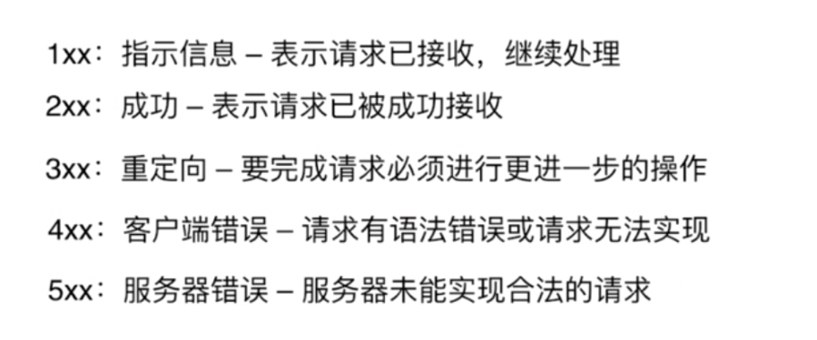
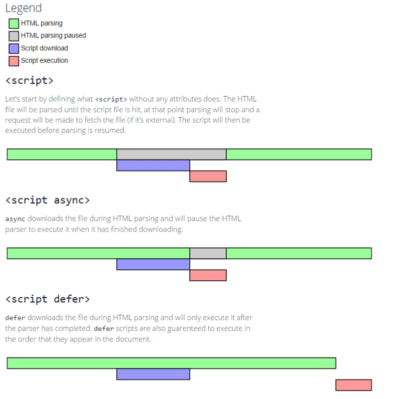

基础
布局
表格布局 float 绝对定位 网格布局 flex布局
事件模型
DOM0级事件处理方式：
通过javascript制定事件处理程序的传统方式。就是将一个函数赋值给一个事件处理属性。
onclick="alert(event)"
DOM2级事件处理方式
DOM2级事件处理方式指定了，添加事件处理程序和删除事件处理程序的方法。
c.addEventListener('click', function () {
alert('子节点捕获')
}, true);
c.addEventListener('click', function (e) {
alert('子节点冒泡')
}, false);
DOM3事件
DOM浏览器中可能发生的事件有很多种，不同事件类型具有不同的信息，DOM3级事件规定了一下几种事件：
8
UI事件，当用户与页面上的元素交互时触发；
焦点事件，当元素获得或者失去焦点时触发；
鼠标事件，当用户通过鼠标在页面上执行操作时触发；
滚轮事件，当使用鼠标滚轮（或类似设备）时触发；
文本事件，当在文档中，输入文本时触发；
键盘事件，当用户通过键盘在页面上执行操作时触发；
合成事件，当为IME（Input Method Editor，输入法编辑器）输入字符时触发；
变动事件，当底层Dom结构发生变化时触发；
捕获和冒泡
事件流
捕获 -》 目标阶段 -》冒泡
Http协议
简单快速 灵活 无连接 无状态
请求报文
请求行 请求头 空行 请求体
响应报文
状态行 响应头 空行 响应体
请求的类型
get -获取资源 post -传输资源 put - 更新资源 delete - 删除资源 head - 获得报文头部
在不想保存到历史的get可以使用post
响应的状态码

http如果需要持久链接需要通过keep-Alive
原型链
_files/Image [1].png)
通信类
前端与后端的通信
Ajax:只支持同源
WebSocket:不限制同源策略
CORS: (新)支持跨域和不限制同源限制
跨域的几种方式(就害怕WC)
_files/Image [2].png)
_files/Image [3].png)
fetch(CORS的实现方式)
_files/Image [4].png)
后端修改内容
_files/Image [6].png)
前端安全相关
CSRF cs若风
_files/Image [7].png)
_files/Image [8].png)
解决方案：
给与token验证
来源验证
隐藏的认证与Token类似
XSS 脚本注入
核心原理为为你的页面注入脚本js运行
使插入的JS无法执行
排序
_files/Image [9].png)
快速排序（ologN） 选择排序 希尔排序 看前端知识点 冒泡排序不能忘
渲染机制
_files/Image [10].png)
_files/Image [11].png)
浏览器渲染过程
_files/Image [12].png)
1、构建DOM树
将HTML构建成一个DOM树，也就是构建节点，把所有的节点都构建出来。
2、构建CSSOM
解析css去构建CSSOM树
3、构建render树
DOM已经构建好了，css也有了，浏览器就会根据这两个来构造render树，浏览器就知道了有哪些节点、各个节点的CSS定义以及他们的从属关系。
4、布局
当render树有了，通过render树，浏览器开始计算各个节点的位置和样式。
5、绘制
遍历render树，在页面上绘制每个节点。
6、重排reflow
当render树绘制完成之后，比如JavaScript改变样式或添加节点，这时候render树就需要重新计算。
Reflow
_files/Image [13].png)
Reflow之后Repaint
_files/Image [14].png)
Js的运行机制
_files/Image [15].png)
将会输出 132
这是一个异步任务
异步任务要挂起
同步任务 -》 异步任务
_files/Image [16].png)
将只输出A 因为while是同步的
（最小是4毫秒）
_files/Image [17].png)
页面性能的提升
_files/Image [18].png)
defer1一定比defer2先加载_files/Image [19].png)
async如果2比较大则async2先加 载_files/Image [20].png)
_files/Image [21].png)

前端资源缓存
_files/Image [22].png)
强缓存：不直接请求直接用
绝对时间《 相对时间
协商缓存：询问服务器本地文件是不是可以用是不是过期了
上次修改时间 etag:如key值一样，如果改变了就从新请求若不改变则用本地缓存
5.如果是http协议的a标签是默认打开dns预解析，如果是https则是关闭的，所以要加这段??????
_files/Image [23].png)
错误的上报
- ajax 2.Images
什么是DOCTYPE？
_files/Image [24].png)
严格模式：又称标准模式，是指浏览器按照 W3C 标准解析代码。
混杂模式：又称怪异模式或兼容模式，是指浏览器用自己的方式解析代码。
数字不对函数日正
_files/Image [25].png)